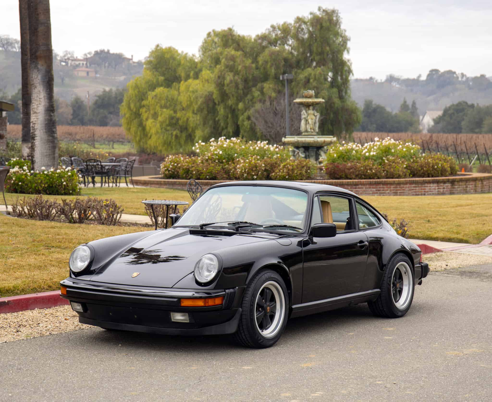

GRAN TURISMOPorsche 911 Carrera (1985)
 La esencia de la ingeniería automotriz alemana. Este modelo Carrera está equipado con el legendario motor bóxer de seis cilindros refrigerado por aire de 3.2 litros, conocido por su fiabilidad mecánica y sonido inconfundible. Su pintura original se mantiene en excelente estado y cuenta con historial de mantenimiento completo, siendo una pieza ideal para coleccionistas exigentes. |